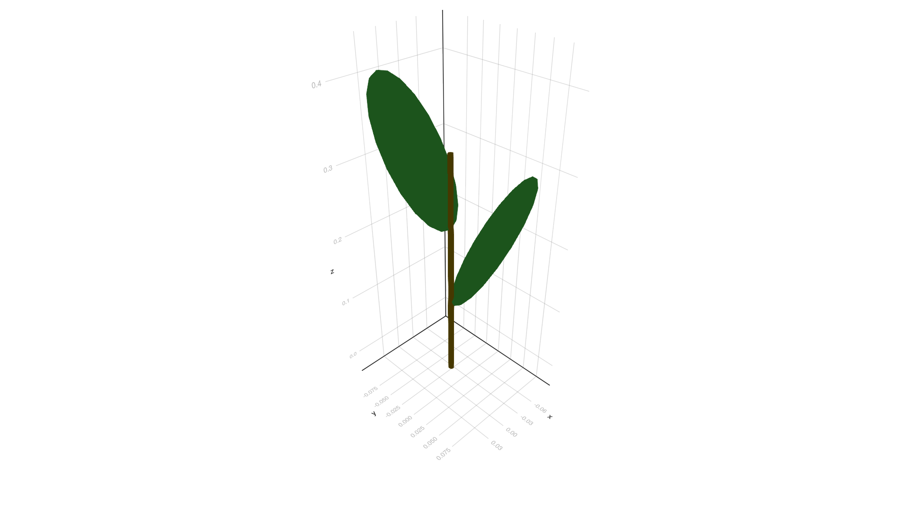

Centre for Crop Systems Analysis - Wageningen University
Published
March 22, 2023
In this example we build a 3D representation of a binary TreeTypes. Although this will not look like a real plant, this example will help introduce additional features of VPL.
The model requires five types of nodes:
Meristem: These are the nodes responsible for growth of new organs in our binary TreeTypes. They contain no data or geometry (i.e. they are a point in the 3D structure).
Internode: The result of growth of a branch, between two nodes. Internodes are represented by cylinders with a fixed width but variable length.
Node: What is left after a meristem produces a new organ (it separates internodes). They contain no data or geometry (so also a point) but are required to keep the branching structure of the tree as well as connecting leaves.
Bud: These are dormant meristems associated to tree nodes. When they are activated, they become an active meristem that produces a branch. They contain no data or geometry but they change the orientation of the turtle.
BudNode: The node left by a bud after it has been activated. They contain no data or geometry but they change the orientation of the turtle.
Leaf: These are the nodes associated to leaves in the TreeTypes. They are represented by ellipses with a particular orientation and insertion angle. The insertion angle is assumed constant, but the orientation angle varies according to an elliptical phyllotaxis rule.
In this first simple model, only internodes grow over time according to a relative growth rate, whereas leaves are assumed to be of fixed sized determined at their creation. For simplicity, all active meristems will produce an phytomer (combination of node, internode, leaves and buds) per time step. Bud break is assumed stochastic, with a probability that increases proportional to the number of phytomers from the apical meristem (up to 1). In the following tutorials, these assumptions are replaced by more realistic models of light interception, photosynthesis, etc.
In order to simulate growth of the 3D binary tree, we need to define a parameter describing the relative rate at which each internode elongates in each iteration of the simulation, a coefficient to compute the probability of bud break as well as the insertion and orientation angles of the leaves. We could stored these values as global constants, but VPL offers to opportunity to store them per plant. This makes it easier to manage multiple plants in the same simulation that may belong to different species, cultivars, ecotypes or simply to simulate plant-to-plant variation. Graphs in VPL can store an object of any user-defined type that will me made accessible to graph rewriting rules and queries. For this example, we define a data type treeparams that holds the relevant parameters. We use Base.@kwdef to assign default values to all parameters and allow to assign them by name.
usingVPLmodule TreeTypesimportVPL# Meristemstruct Meristem <: VPL.Node end# Budstruct Bud <: VPL.Node end# Nodestruct Node <: VPL.Node end# BudNodestruct BudNode <: VPL.Node end# Internode (needs to be mutable to allow for changes over time)Base.@kwdefmutable struct Internode <: VPL.Node length::Float64 =0.10# Internodes start at 10 cmend# LeafBase.@kwdefstruct Leaf <: VPL.Node length::Float64 =0.20# Leaves are 20 cm long width::Float64 =0.1# Leaves are 5 cm wideend# Graph-level variablesBase.@kwdefstruct treeparams growth::Float64 =0.1 budbreak::Float64 =0.25 phyllotaxis::Float64 =140.0 leaf_angle::Float64 =30.0 branch_angle::Float64 =45.0endend
As always, the 3D structure and the color of each type of node are implemented with the feed! method. In this case, the internodes and leaves have a 3D representation, whereas bud nodes rotate the turtle. The rest of the elements of the trees are just points in the 3D structure, and hence do not have an explicit geometry:
# Create geometry + color for the internodesfunction VPL.feed!(turtle::Turtle, i::TreeTypes.Internode, vars)# Rotate turtle around the head to implement elliptical phyllotaxisrh!(turtle, vars.phyllotaxis) HollowCylinder!(turtle, length = i.length, height = i.length/15, width = i.length/15, move =true, color =RGB(0.5,0.4,0.0))returnnothingend# Create geometry + color for the leavesfunction VPL.feed!(turtle::Turtle, l::TreeTypes.Leaf, vars)# Rotate turtle around the arm for insertion anglera!(turtle, -vars.leaf_angle)# Generate the leaf Ellipse!(turtle, length = l.length, width = l.width, move =false, color =RGB(0.2,0.6,0.2))# Rotate turtle back to original directionra!(turtle, vars.leaf_angle)returnnothingend# Insertion angle for the bud nodesfunction VPL.feed!(turtle::Turtle, b::TreeTypes.BudNode, vars)# Rotate turtle around the arm for insertion anglera!(turtle, -vars.branch_angle)end
The growth rule for a branch within a tree is simple: a phytomer (or basic unit of morphology) is composed of a node, a leaf, a bud node, an internode and an active meristem at the end. Each time step, the meristem is replaced by a new phytomer, allowing for developmemnt within a branch.
Rule replacing nodes of type Main.TreeTypes.Meristem without context capturing.
In addition, every step of the simulation, each bud may break, creating a new branch. The probability of bud break is proportional to the number of phytomers from the apical meristem (up to 1), which requires a relational rule to count the number of internodes in the graph up to reaching a meristem. When a bud breaks, it is replaced by a bud node, an internode and a new meristem. This new meristem becomes the apical meristem of the new branch, such that meristem_rule would apply. Note how we create an external function to compute whether a bud breaks or not. This is useful to keep the branch_rule rule simple and readable, while allow for a relatively complex bud break model. It also makes it easier to debug the bud break model, since it can be tested independently of the graph rewriting.
functionprob_break(bud)# We move to parent node in the branch where the bud was created node =parent(bud)# We count the number of internodes between node and the first Meristem # moving down the graph check, steps =hasDescendent(node, condition = n ->data(n) isa TreeTypes.Meristem) steps =Int(ceil(steps/2)) # Because it will count both the nodes and the internodes# Compute probability of bud break and determine whether it happensif check prob =min(1.0, steps*vars(bud).budbreak)returnrand() < prob# If there is no meristem, an error happened since the model does not allow for this elseerror("No meristem found in branch")endendbranch_rule =Rule(TreeTypes.Bud, lhs = prob_break, rhs = bud -> TreeTypes.BudNode() + TreeTypes.Internode() + TreeTypes.Meristem())
Rule replacing nodes of type Main.TreeTypes.Bud without context capturing.
A binary tree initializes as an internode followed by a meristem, so the axiom can be constructed simply as:
And the object for the tree can be constructed as in previous examples, by passing the axiom and the graph rewriting rules, but in this case also with the object with growth-related parameters.
tree =Graph(axiom = axiom, rules = (meristem_rule, branch_rule), vars = TreeTypes.treeparams())
Dynamic graph with 2 nodes of types Main.TreeTypes.Meristem,Main.TreeTypes.Internode and 2 rewriting rules.
Dynamic graph variables stored in struct of type Main.TreeTypes.treeparams
Note that so far we have not included any code to simulate growth of the internodes. The reason is that, as elongation of internotes does not change the topology of the graph (it simply changes the data stored in certain nodes), this process does not need to be implemented with graph rewriting rules. Instead, we will use a combination of a query (to identify which nodes need to be altered) and direct modification of these nodes:
getInternode =Query(TreeTypes.Internode)
Query object for nodes of type Main.TreeTypes.Internode
If we apply the query to a graph using the apply function, we will get an array of all the nodes that match the query, allow for direct manipulation of their contents. To help organize the code, we will create a function that simulates growth by multiplying the length argument of all internodes in a tree by the growth parameter defined in the above:
functionelongate!(tree, query)for x inapply(tree, query) x.length = x.length*(1.0+vars(tree).growth)endend
elongate! (generic function with 1 method)
Note that we use vars on the Graph object to extract the object that was stored inside of it. Also, as this function will modify the graph which is passed as input, we append an ! to the name (this not a special syntax of the language, its just a convention in the Julia community). Also, in this case, the query object is kept separate from the graph. We could have also stored it inside the graph like we did for the parameter growth. We could also have packaged the graph and the query into another type representing an individual TreeTypes. This is entirely up to the user and indicates that a model can be implemented in many differences ways with VPL.
Simulating the growth a tree is a matter of elongating the internodes and applying the rules to create new internodes:
and a simulation for n steps is achieved with a simple loop:
functionsimulate(tree, query, nsteps) new_tree =deepcopy(tree)for i in1:nstepsgrowth!(new_tree, query)endreturn new_treeend
simulate (generic function with 1 method)
Notice that the simulate function creates a copy of the object to avoid overwriting it. If we run the simulation for a couple of steps
newtree =simulate(tree, getInternode, 2)
Dynamic graph with 10 nodes of types Main.TreeTypes.Meristem,Main.TreeTypes.Bud,Main.TreeTypes.Node,Main.TreeTypes.Internode,Main.TreeTypes.Leaf and 2 rewriting rules.
Dynamic graph variables stored in struct of type Main.TreeTypes.treeparams
The binary tree after two iterations has two branches, as expected:
render(newtree)

Notice how the lengths of the prisms representing internodes decreases as the branching order increases, as the internodes are younger (i.e. were generated fewer generations ago). Further steps will generate a structure that is more tree-like.